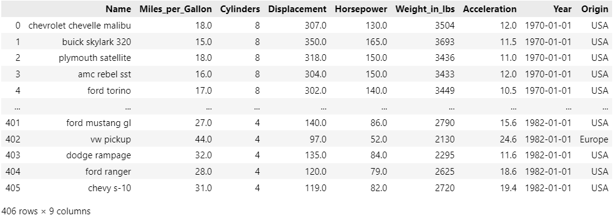

How to Deploy Plotly Graphics to a Simple Static Web Page
Plotly has a native method to create basic web pages but with a little more effort, web templates get you a much better result
You don't always need a complex or interactive app to convey a compelling data visualisation message. Often a simple web page will be entirely adequate.
So, to that end, I'm going to describe a short Python function that will build a web page from any Python graphic and any web template.
You can view the result directly in your browser or deploy it to a free static web server such as GitHub Pages.
When you create a graphic in Plotly, it creates an intermediate representation of the graph. This is interpreted by a Javascript library to render the graph on a web page. So, all you need to do is create your chart in Python, export it and then load the result into a web page that uses the Plotly.js library.
No big deal!
But it would be better to have the whole thing automated with a simple Python library function. So, that is what we will do.
Build a graph
We are going to build a scatter chart with a trend line like the one below. This is pretty straightforward in Plotly Express using the scatter diagram function.

For convenience and demonstration purposes, instead of importing external data we will use the 'cars' dataset from the vega_datasets library. But, of course, you would import your own data to create your particular web page.
The cars data is shown in the image, below.

It's basically data about a range of old cars like the one below.
.jpg)
1965 Chevrolet Impala Sport Coupe photographed by # MercurySable99 CC BY-SA 4.0 license.
Two of the data records are about how powerful each car is (the 'horsepower') and the rate at which they accelerate (the number of seconds to get from one speed to a higher one - I'm not absolutely sure but I'm guessing it is the 0 to 60 mph time).
You can see the code that implements this chart, below - it's not very tricky.
# Display cars data
import plotly.express as px
from vega_datasets import data
cars = data.cars()
chart = px.scatter(cars, x="Acceleration", y="Horsepower", trendline="ols",
height=500, width=800,
title = "Cars: Acceleration and Horsepower",
template="plotly_white")
First, we import the libraries, then load the data into a Pandas dataframe and finally construct a scatter plot with a trend line.
You can run this code into a Jupyter Notebook or a Streamlit app and easily display chart.
But if you want to create a web page it's a slightly different matter.
Native functions
Plotly has a function that will create an HTML web page automatically for you. However, the result is pretty basic. If you append the following code to the chart code, above, and you'll get a simple HTML page that looks just like the simple graph image we saw earlier. And while that is perfectly fine, it's just a graph; there is no explanation or comment.
# Save as HTML with native method
with open('page.html', 'w') as f:
f.write(chart.to_html())
There is a simple alternative that can give us a better result where we can include the image in a web page but also add commentary, headings and whatever else you would like. We can write a reusable HTML template and import the chart code into it.
Write a template
So, now we'll see how by using a simple web template and a general-purpose function we can fill that template with chart data and supporting text.
We will produce a page that looks like the image below.
You can see that as well as the chart there is a header and a textual description. This template is not terrifically sophisticated - it is up to you just how complex you want it to be,
The Python code that produce the chart is listed below - it's essentially similar to the one we saw previously but it also defines the textual content of the page. That text is defined as a set parameters in a Python dictalong with a JSON version of the chart produced by the built-in function .tojson().
import plotly.express as px
from vega_datasets import data
import deployplotly
cars = data.cars()
chart = px.scatter(cars, x="Acceleration", y="Horsepower", trendline="ols",
height=600, width=1200,
title = "Cars: Acceleration and Horsepower",
template="plotly_white")
params = {'title':'Deploy Plotly Chart as a web page',
'subtitle':'Example of how to deploy an Plotly chart to a custom HTML template',
'description':"""
Below is a scatter diagram with a regression line that explores the relationship between
accleration an horsepower in the datasets 'cars' from vega datasets.
""",
'spec':chart.to_json()
}
deployplotly.deploy('./page.html', './bs-simple.html', params)
The last line of code calls a library function that takes a pre-written web page template and creates the final HTML page by inserting into it the parameters that we set in the main code.
This library function can be used with any HTML template, with an arbitrary number of parameters. It works using the jinja2templating library - if you've ever used the Flask microframework, you may well be familiar with it.
from jinja2 import Template
def deploy(targetfile, templatefile, data):
# get the template and render with the data
with open(templatefile,'r') as f:
template = f.read()
j2_template = Template(template)
t = j2_template.render(data)
# write the final html
with open(targetfile, 'w') as f:
f.write(t)
We can see the HTML template below. It is a simple page that uses the Bootstrap UI library. This could be stripped out but it would result in a much less attractive webpage and it doesn't reduce the complexity by much.
<!DOCTYPE html>
<html>
<head>
<meta charset="UTF-8">
<meta name="viewport" content="width=device-width, initial-scale=1.0">
<link href="https://cdn.jsdelivr.net/npm/bootstrap@5.0.2/dist/css/bootstrap.min.css" rel="stylesheet"
integrity="sha384-EVSTQN3/azprG1Anm3QDgpJLIm9Nao0Yz1ztcQTwFspd3yD65VohhpuuCOmLASjC" crossorigin="anonymous">
<script src="https://cdn.plot.ly/plotly-2.30.0.min.js" charset="utf-8"></script>
</head>
<body class="container">
<header class="bg-primary text-white text-center py-8">
<h1 class="display-4">{{title}}</h1>
<p class="lead">{{subtitle}}</p>
</header>
<div>{{description}}</div>
<div class="p-5" style="width:80%" id="vis"></div>
<script type="text/javascript">
var graphs = {{ spec | safe}};
Plotly.react("vis", graphs, {});
</script>
<script src="https://cdn.jsdelivr.net/npm/bootstrap@5.0.2/dist/js/bootstrap.bundle.min.js"
integrity="sha384-MrcW6ZMFYlzcLA8Nl+NtUVF0sA7MsXsP1UyJoMp4YLEuNSfAP+JcXn/tWtIaxVXM"
crossorigin="anonymous"></script>
</body>
</html>
The parameters are shown in the HTML file using the names we saw in the Python dict- they are enclosed in double curly braces, e.g. {{title}}. The additional keyword, safe, is used with the specparameter. This will contain the JSON code and safe signals to the template engine that any special characters should be used as they are and not translated in any way (e.g. converting >into the >character).
All three files should reside in the same directory and if we run the main Python program the result is a new webpage (named page.html) that can be loaded into your local browser or deployed (often for free) to a static web site like GitHub pages.
Conclusion
Simple HTML emplates are fairly eay to create and with the addition of Bootstrap user interface components can be used to create compelling web sites.
And, as I hope that you can see, a different web page (while structurally the same) could be created simply by giving the parameters different values. If you are interested in establishing a house style, or brand, this is definitely a way to do it.
Or, of course, a completely different page could be created by using another template with different parameters. The advantage of the technique that I have illustrated here is that once you have decided upon a template, the rest is automatic - the library function is suitable for pretty much any circumstance..
I hope that this has given you food for thought and that you might use this technique in publishing your data visualisations on the web.
Thanks for reading and if this type of article is interesting, please take a look at my webpage and/or subscribe to my free, occasional newsletter where I publicise my work.